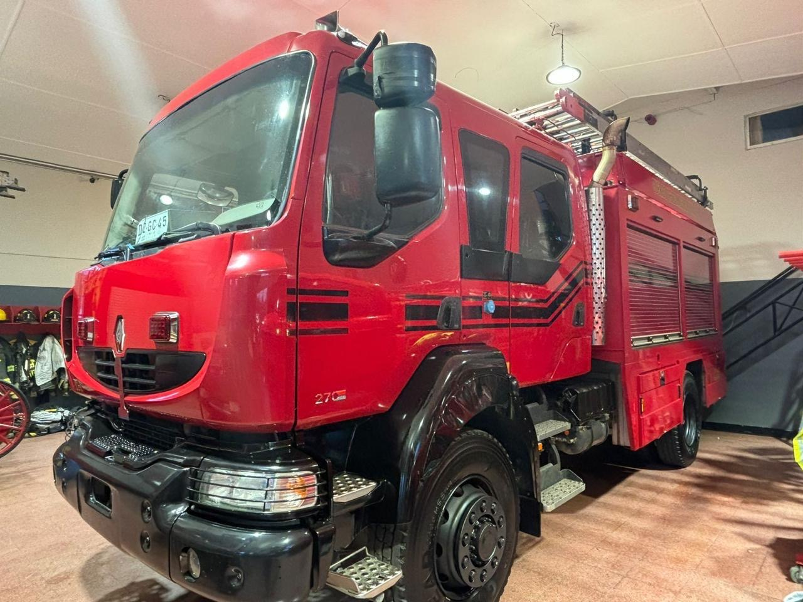
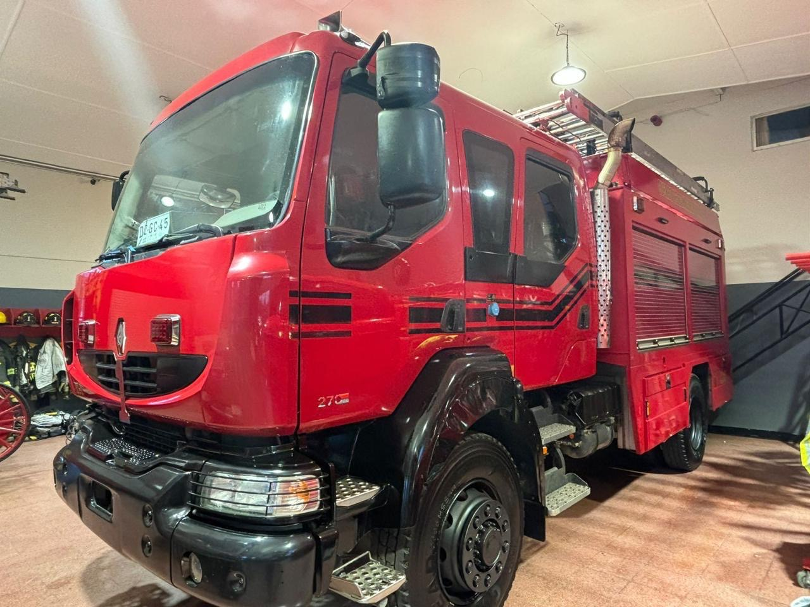
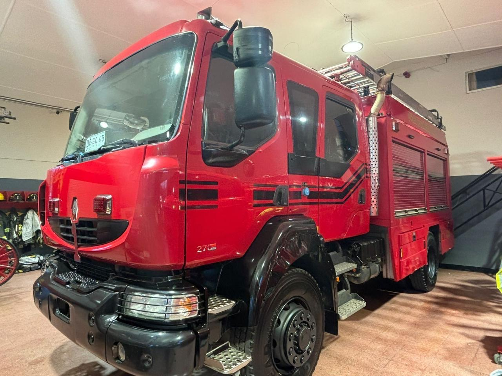
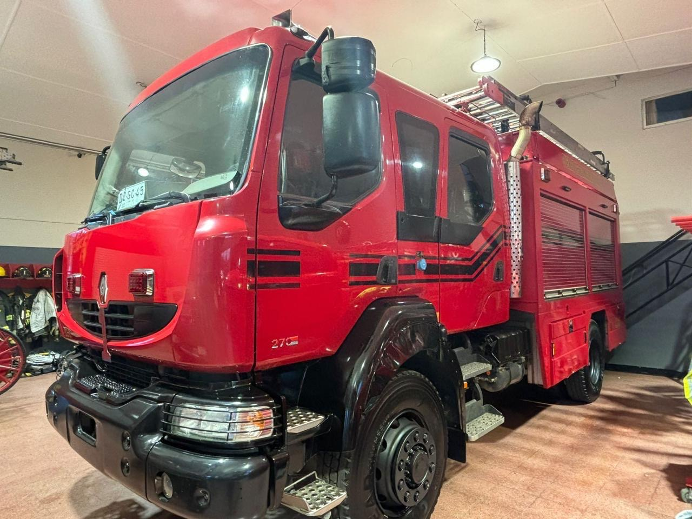

Refurbishment
 



El proceso consiste en ingresar cada vehículo a nuestra Planta Industrial con el fin de comenzar la remanufacturación y/o refabricación, en el cual se revisan los sistemas correspondientes (mecánica motriz, energía, electrónica, carrocería, iluminación, sistemas de alarmas sonoras y visuales, sistemas de bombas de agua, comunicaciones, etc.).
Se diagnostica, se verifica y se reparan (o reemplazan) todas aquellas partes, piezas y componentes que presenten alguna falla o anomalía. Esto, con la finalidad de dejar equipos cien por ciento operativos y lo mas cercano a cuando estos salen de fábrica la primera vez para luego concluir en una certificación total de equipo.
Como líderes en remanufactura de equipos pesados en la industria, la experiencia ha ampliado nuestra capacidad para responder a la gran demanda de renovación de tipos adicionales de vehículos complejos. Las operaciones de Valparaíso se han visto incrementadas para incluir la remanufactura de varios equipos y vehículos comerciales pesados.
El programa REBUILD es exclusivo y sistemático de Rhinomec, con sus procesos integrales y de calidad controlada, sigue siendo el enfoque principal de la compañía en la actualidad.